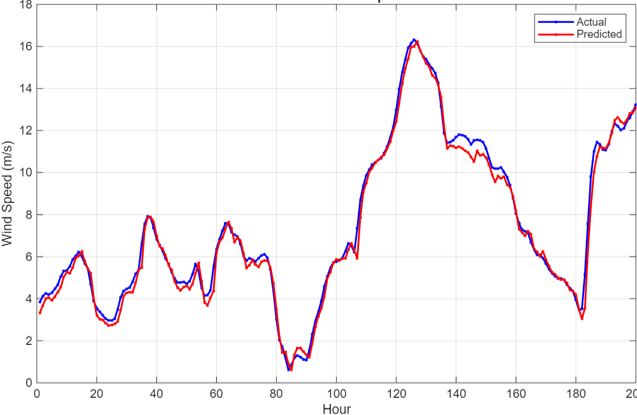
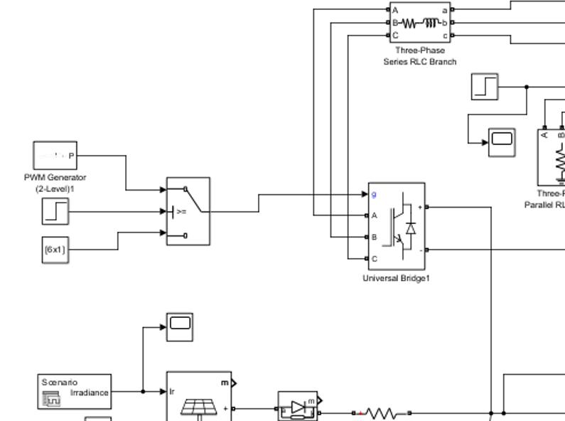
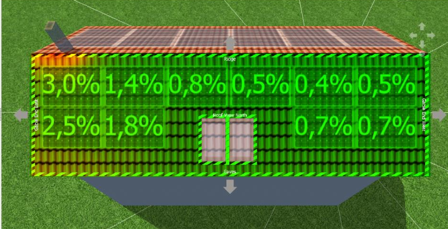
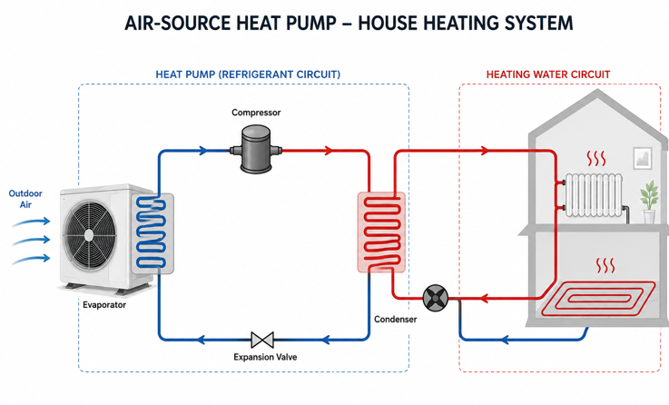

2021 to Feb 2027 (expected)
B.Sc. in Energy Systems Engineering, Yaşar University
Relevant courses: Renewable Energy Systems Integration, Solar Energy, Heat Pumps.
Energy Systems Engineering student
Yaşar University, İzmir. Graduating in February 2027.
I am looking for a long-term internship or a part-time position in the energy sector.
I'm a final-year Energy Systems Engineering student in İzmir. In my capstone project I built ANN and LSTM models to forecast wind and solar energy. I have also modeled a microgrid in MATLAB/Simulink and designed a rooftop PV system in PV*SOL. During my internship at Petkim I studied gas turbines and HRSG systems up close. My background in drama and sales has also made me comfortable communicating and working in a team.
Relevant courses: Renewable Energy Systems Integration, Solar Energy, Heat Pumps.
I developed a hybrid prediction model that combines Artificial Neural Network (ANN) and Long Short-Term Memory (LSTM) approaches. I applied it first to wind energy, then to combined wind and solar energy, and compared the results.
Within each model I tested different dataset-length scenarios to see how the amount of training data changes prediction performance.
I co-authored the oral presentation, delivered with my academic advisor at the International Conference on Nuclear and Renewable Energy Resources (NURER 2026) in Almaty, Kazakhstan.

Modeled a microgrid in Simulink to study how renewable sources integrate into a local power system.

Designed a rooftop photovoltaic system and simulated its performance in PV*SOL.

Course project on designing a heat pump system.

I'm based in İzmir, Türkiye, and happy to talk about internships and part-time roles in the energy sector.